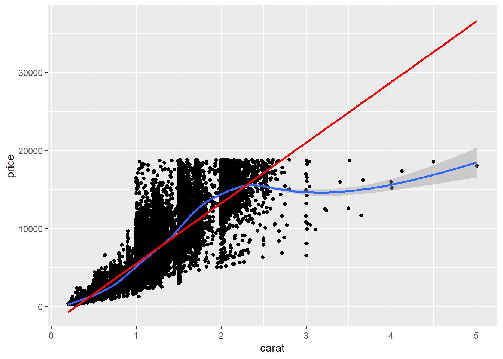

Recognize when it would be useful to write a function
Identify the core components of a function definition and explain their role (the function() directive, arguments, argument defaults, function body, return value)
Identify the scoping of a function in accessing objects in R
Describe the difference between argument matching by position and by name
Write if-else, if-else if-else statements to conditionally execute code
Write your own function to carry out a repeated task
Provide feedback on functions written by others
Functions and Control Structures
Why functions?
Getting really good at writing useful and reusable functions is one of the best ways to increase your expertise in data science. It requires a lot of practice.
If you’ve copied and pasted code 3 or more times, it’s time to write a function. Try to avoid repeating yourself.
Reducing errors: Copy + paste + modify is prone to errors (e.g., forgetting to change a variable name)
Efficiency: If you need to update code, you only need to do it one place. This allows reuse of code within and across projects.
Readability: Encapsulating code within a function with a descriptive name makes code more readable.
Core parts of a function
When you define a function, what does it look like?
Code
# Defining a functionfunction_name <-function(input_name_1, input_name_2 = default_value_2){# function body - code that does somethingreturn(output)}# Calling a function (all valid ways)function_name(input_name_1 =2, input_name_2 =4)function_name(2, 4)function_name(input_name_2 =4, input_name_1 =2)function_name(2)
The core parts of defining a function include:
function() directive
This is what allows tells R to create a function.
Arguments/Inputs: the input_name_1 and input_name_2 – these are names of the function inputs
default_value_2 is a default value that is used if no input values are provided when the function is called
Function body
The code inside the curly braces { } is where all the work happens. This code uses the function arguments to perform computations.
Return value
We can explicitly return an object by putting it inside return().
Here are three examples that can help us learn a few properties of functions:
In average2, the remove_nas argument has a default value of TRUE.
When a function has default values for arguments, they don’t have to be provided when you call the function if you want to use the default value. See below:
Code
# Does throw an erroraverage(c(1, 2, 3, NA))
Error in average(c(1, 2, 3, NA)): argument "remove_nas" is missing, with no default
Code
average(c(1, 2, 3, NA), remove_nas =TRUE)
[1] 1.5
Code
# Doesn't throw an erroraverage2(c(1, 2, 3, NA))
[1] 1.5
Code
average2(c(1, 2, 3, NA), remove_nas =FALSE)
[1] NA
If we don’t provide a return(), the last value that gets evaluated in the function body and isn’t stored as an object is what the function returns. (This is generally the last line without an assignment operator <-.)
average3() is one example, but this can easily lead to errors.
We should explicitly return an object by putting it inside return().
Scope
In programming, scope refers to the area of a program where a named object is recognized and can be used.
R uses lexical scoping, which means that the scope of a variable is determined by where it is created in the code.
Lexical scoping in R:
When code refers to an object (e.g. data set, function, vector, etc.), R looks for the object in the current, local environment.
If it doesn’t find it, it continues to search by looking in the parent environment, and so on. The top-level environment is the global environment, the location where all interactive (i.e. outside of a function) computation and storage takes place.
If you save an object in R, outside a function local environment, it is stored in the global environment.
If R can’t find it in the global environment, it will look for it in loaded packages.
When writing and using functions, the local environment is within the function itself.
If you define an object in the function, it won’t be accessible outside that function (unless you pass it as the output). See below:
Error: object 'fun_new_thing_within_function' not found
Scoping is important to consider if you try to refer to objects that aren’t passed as arguments.
This can be dangerous because if you re-use names of variables, it is easy to accidentally refer to a variable that is not the one you intended. See below:
Anything created/saved/updated within a function that you want accessible outside that function needs to be passed to return(). See below:
Code
v <-c(1,2,3)average_new3 <-function(x, remove_nas =TRUE) { v <- v +10# this is not changing v outside the function... return(sum(x, na.rm = remove_nas)/length(x) )}average_new3(1:3)
Write the code for the body of the function (the task that you are wanting to repeat)
Identify the parts of the function that could/would change (these are the inputs)
Update the body of the function to be in terms of the inputs
Avoid manually typing anything that is specific to one input; use code to get that (such as unique values of a variable)
Identify the output you want to return
Pair programming exercises: There are 2 exercises for each section below.
Read through the introduction of the concept and then work on the exercises together.
You’ll swap driver and navigator roles between exercises.
Remember: The driver writes the code. The navigator oversees and provides guidance.
For the first exercise, the person whose birthday is coming up sooner will be the driver first. Swap role for the second exercise and continue in this manner for all exercises.
Rescaling function Write a function that rescales a numeric vector to be between 0 and 1. Here are some test cases with the expected output. Test out your function on the following inputs:
x = 2:4. Expected output: 0.0 0.5 1.0
x = c(-1, 0, 5). Expected output: 0.0000000 0.1666667 1.0000000
x = -3:-1. Expected output: 0.0 0.5 1.0
Code
rescale <-function(x){ r <-range(x, na.rm =TRUE) (x-r[1])/(r[2]-r[1])}rescale(2:4)
[1] 0.0 0.5 1.0
Code
rescale(c(-1,0,5))
[1] 0.0000000 0.1666667 1.0000000
Code
rescale(-3:-1)
[1] 0.0 0.5 1.0
Phone digits Write a function that formats a 10-digit phone number nicely as (###) ###-####. Your function should work on the following test cases: c("651-330-8661", "6516966000", "800 867 5309"). It may help to refer to the stringr cheatsheet.
When you supply arguments to a function, they can be matched by position and/or by name.
When you call a function without argument = value inside the parentheses, you are using positional matching.
Code
ggplot(diamonds, aes(x = carat, y = price)) +geom_point()
The above works because the first argument of ggplot is data and the second is mapping. (Pull up the documentation on ggplot with ?ggplot in the Console.) So the following doesn’t work:
Code
ggplot(aes(x = carat, y = price), diamonds) +geom_point()
Error in `ggplot()`:
! `mapping` must be created by `aes()`.
✖ You've supplied a tibble.
But if we named the arguments (name matching), we would be fine:
Code
ggplot(mapping =aes(x = carat, y = price), data = diamonds) +geom_point()
Somewhat confusingly, we can name some arguments and not others. Below, mapping is named, but data isn’t. This works because when an argument is matched by name, it is “removed” from the argument list, and the remaining unnamed arguments are matched in the order that they are listed in the function definition. Just because this is possible doesn’t mean it’s a good idea–don’t do this!
Code
ggplot(mapping =aes(x = carat, y = price), diamonds) +geom_point()
Argument matching
In general, it is safest to match arguments by name and position for your peace of mind. For functions that you are very familiar with (and know the argument order), it’s ok to just use positional matching.
Error Messages Diagnose the error message in the example below:
ggplot() |>
geom_sf(census_data, aes(fill = population))
Error in `layer_sf()`:
! `mapping` must be created by `aes()`
The if-else if-else Control Structure
Often in functions, you will want to execute code chunks conditionally. In a programming language, control structures are parts of the language that allow you to control what code is executed. By far the most common is the `if-else if-else structure.
Code
if (logical_condition) {# some code} elseif (other_logical_condition) {# some code} else {# some code}middle <-function(x) { mean_x <-mean(x, na.rm =TRUE) median_x <-median(x, na.rm =TRUE) seems_skewed <- (mean_x >1.5*median_x) | (mean_x < (1/1.5)*median_x)if (seems_skewed) { median_x } else { mean_x }}
To vectorize or not to vectorize
The if () else {} code is not vectorized; the logical condition in if() cannot be a logical vector of length longer than 1. If you want a vectorized version of conditional execution of code use if_else() or case_when(); these can be used in mutate().
Convert Temp Write a function for converting temperatures that takes as input a numeric value and a unit (either “C” for Celsius or “F” for Fahrenheit). The function should convert the temperature from one unit to the other based on the following formulas:
To convert Celsius to Fahrenheit: (Celsius * 9/5) + 32
To convert Fahrenheit to Celsius: (Fahrenheit - 32) * 5/9
Domain Name Write a function that extracts the domain name of a supplied email address. The function should return the domain name (e.g., “gmail.com”). If the input is not a valid email address, return “Invalid Email”. (A valid email ends in “dot something”.)
Writing Functions with tidyverse Verbs
Perhaps we are using group_by() and summarize() a lot to compute group means. We might write this function:
Error in `group_by()`:
! Must group by variables found in `.data`.
✖ Column `group_var` is not found.
What’s Going On?
The tidyverse uses something called tidy evaluation: this allows you to refer to a variable by typing it directly (e.g., no need to put it in quotes).
group_by(group_var) is expecting a variable that is actually called group_var, and mean(mean_var) is expecting a variable that is actually called mean_var.
To fix this we need to embrace the variables inside the function with { var }:
Prop function Create a new version of dplyr::count() that also shows proportions instead of just sample sizes. The function should be able to handle counting by multiple variables. Test your function with two different sets of arguments using the diamonds dataset.
Scatterplot + Smooth function Create a function that creates a scatterplot from a user-supplied dataset with user-supplied x and y variables. The plot should also show a curvy smoothing line in blue, and a linear smoothing line in red. Test your function using the diamonds dataset.
Code
scatter_plot <-function(df, x, y){ggplot(df, aes(x ={{x}}, y = {{y}})) +geom_point()+geom_smooth()+geom_smooth(method ='lm', color ='red')}scatter_plot(diamonds, carat, price)

Done!
Check the ICA Instructions for how to (a) push your code to GitHub and (b) update your portfolio website
Source Code
---title: "9 Functions"---```{r doc_setup_09, echo=FALSE, message=FALSE}library(tidyverse)```## 🧩 Learning GoalsBy the end of this lesson, you should be able to:- Recognize when it would be useful to write a function- Identify the core components of a function definition and explain their role (the `function()` directive, arguments, argument defaults, function body, return value)- Identify the scoping of a function in accessing objects in R- Describe the difference between argument matching by position and by name- Write `if`-`else`, `if`-`else if`-`else` statements to conditionally execute code- Write your own function to carry out a repeated task- Provide feedback on functions written by others## Functions and Control Structures ### Why functions? Getting really good at writing useful and reusable functions is one of the best ways to increase your expertise in data science. It requires a lot of practice.If you've copied and pasted code **3 or more times**, it's time to write a function. Try to avoid repeating yourself.:::{.incremental}1. **Reducing errors:** Copy + paste + modify is prone to errors (e.g., forgetting to change a variable name)2. **Efficiency:** If you need to update code, you only need to do it one place. This allows reuse of code within and across projects.3. **Readability:** Encapsulating code within a function with a descriptive name makes code more readable.:::### Core parts of a function When you define a function, what does it look like?```{r eval = FALSE}# Defining a functionfunction_name <-function(input_name_1, input_name_2 = default_value_2){# function body - code that does somethingreturn(output)}# Calling a function (all valid ways)function_name(input_name_1 =2, input_name_2 =4)function_name(2, 4)function_name(input_name_2 =4, input_name_1 =2)function_name(2)```The core parts of defining a function include:- **`function()` directive** - This is what allows tells R to create a function.- **Arguments/Inputs**: the `input_name_1` and `input_name_2` -- these are names of the function inputs - `default_value_2` is a default value that is used if no input values are provided when the function is called- **Function body** - The code inside the curly braces `{ }` is where all the work happens. This code uses the function arguments to perform computations.- **Return value** - We can explicitly return an object by putting it inside `return()`.Here are three examples that can help us learn a few properties of functions:```{r}average <-function(x, remove_nas) {return(sum(x, na.rm = remove_nas)/length(x))}average2 <-function(x, remove_nas =TRUE) {return(sum(x, na.rm = remove_nas)/length(x))}average3 <-function(x, remove_nas) {sum(x, na.rm = remove_nas)/length(x)}```Note:- In `average2`, the `remove_nas` argument has a **default** value of `TRUE`.When a function has default values for arguments, they don't have to be provided when you call the function if you want to use the default value. See below:```{r error = TRUE}# Does throw an erroraverage(c(1, 2, 3, NA))average(c(1, 2, 3, NA), remove_nas =TRUE)# Doesn't throw an erroraverage2(c(1, 2, 3, NA))average2(c(1, 2, 3, NA), remove_nas =FALSE)```- If we don't provide a `return()`, the last value that gets evaluated in the **function body** and isn't stored as an object is what the function returns. (This is generally the last line without an assignment operator `<-`.) - `average3()` is one example, but this can easily lead to errors. - We should explicitly return an object by putting it inside `return()`.## Scope In programming, **scope** refers to the area of a program where a named object is recognized and can be used. - R uses **lexical scoping**, which means that the scope of a variable is determined by where it is created in the code. Lexical scoping in R:- When code refers to an object (e.g. data set, function, vector, etc.), R looks for the object in the current, **local environment**. - If it doesn't find it, it continues to search by looking in the parent environment, and so on. The top-level environment is the **global environment**, the location where all interactive (i.e. outside of a function) computation and storage takes place. - If you save an object in R, outside a function local environment, it is stored in the global environment. - If R can't find it in the global environment, it will look for it in loaded packages.When writing and using functions, the local environment is within the function itself. - If you define an object in the function, it won't be accessible outside that function (unless you pass it as the output). See below:```{r error=TRUE}average_new <-function(x, remove_nas =TRUE) {sum(x, na.rm = remove_nas)/length(x) fun_new_thing_within_function <-"Fun times!"}average_new(1:3)fun_new_thing_within_function```Scoping is important to consider if you try to refer to objects that aren't passed as arguments. - This can be dangerous because if you re-use names of variables, it is easy to accidentally refer to a variable that is not the one you intended. See below:```{r error=TRUE}v <-c(1,2,3)average_new2 <-function(x, remove_nas =TRUE) {sum(x, na.rm = remove_nas)/length(x) + v}average_new2(1:3)v <-c(4,5,6)average_new2(1:3)```Anything created/saved/updated within a function that you want accessible outside that function needs to be passed to `return()`. See below:```{r error=TRUE}v <-c(1,2,3)average_new3 <-function(x, remove_nas =TRUE) { v <- v +10# this is not changing v outside the function... return(sum(x, na.rm = remove_nas)/length(x) )}average_new3(1:3)v```For more about lexical scoping in R, see [R Programming for Data Science](https://bookdown.org/rdpeng/rprogdatascience/scoping-rules-of-r.html)## Writing Functions Tips for writing functions:- Write the code for the body of the function (the task that you are wanting to repeat)- Identify the parts of the function that could/would change (these are the inputs) - Update the body of the function to be in terms of the inputs - Avoid manually typing anything that is specific to one input; use code to get that (such as unique values of a variable) - Identify the output you want to return**Pair programming exercises:** There are 2 exercises for each section below. - Read through the introduction of the concept and then work on the exercises together. - You'll swap driver and navigator roles between exercises. - Remember: The driver writes the code. The navigator oversees and provides guidance. - For the first exercise, the person whose birthday is coming up sooner will be the driver first. Swap role for the second exercise and continue in this manner for all exercises.1. **Rescaling function** Write a function that rescales a numeric vector to be between 0 and 1. Here are some test cases with the expected output. Test out your function on the following inputs:- `x = 2:4`. Expected output: `0.0 0.5 1.0`- `x = c(-1, 0, 5)`. Expected output: `0.0000000 0.1666667 1.0000000`- `x = -3:-1`. Expected output: `0.0 0.5 1.0````{r}rescale <-function(x){ r <-range(x, na.rm =TRUE) (x-r[1])/(r[2]-r[1])}rescale(2:4)rescale(c(-1,0,5))rescale(-3:-1)```2. **Phone digits** Write a function that formats a 10-digit phone number nicely as `(###) ###-####`. Your function should work on the following test cases: `c("651-330-8661", "6516966000", "800 867 5309")`. It may help to refer to the `stringr` cheatsheet.```{r}phone_digits <-function(x){ only_num <-str_remove_all(x,"[^\\d]")str_c("(", str_sub(only_num,1,3), ") ", str_sub(only_num,4,6), "-",str_sub(only_num,7,-1) )}phone_digits(c("651-330-8661", "6516966000", "800 867 5309"))```## Calling a Function When you supply arguments to a function, they can be matched **by position** and/or **by name**.When you call a function without `argument = value` inside the parentheses, you are using **positional matching**.```{r eval=FALSE}ggplot(diamonds, aes(x = carat, y = price)) +geom_point()```The above works because the first argument of `ggplot` is `data` and the second is `mapping`. (Pull up the documentation on `ggplot` with `?ggplot` in the Console.) So the following doesn't work:```{r error=TRUE}ggplot(aes(x = carat, y = price), diamonds) +geom_point()```But if we named the arguments (**name matching**), we would be fine:```{r eval=FALSE}ggplot(mapping =aes(x = carat, y = price), data = diamonds) +geom_point()```Somewhat confusingly, we can name some arguments and not others. Below, `mapping` is named, but `data` isn't. This works because when an argument is matched by name, it is "removed" from the argument list, and the remaining unnamed arguments are matched in the order that they are listed in the function definition. **Just because this is possible doesn't mean it's a good idea--don't do this!**```{r eval=FALSE}ggplot(mapping =aes(x = carat, y = price), diamonds) +geom_point()```::: {.callout-tip title="Argument matching"}In general, it is safest to match arguments by name and position for your peace of mind. For functions that you are very familiar with (and know the argument order), it's ok to just use positional matching.:::3. **Error Messages** Diagnose the error message in the example below:```ggplot() |> geom_sf(census_data, aes(fill = population))Error in `layer_sf()`:! `mapping` must be created by `aes()````## The `if-else if-else` Control Structure Often in functions, you will want to execute code chunks conditionally. In a programming language, **control structures** are parts of the language that allow you to control what code is executed. By far the most common is the ``if-else if-else` structure.```{r eval=FALSE}if (logical_condition) {# some code} elseif (other_logical_condition) {# some code} else {# some code}middle <-function(x) { mean_x <-mean(x, na.rm =TRUE) median_x <-median(x, na.rm =TRUE) seems_skewed <- (mean_x >1.5*median_x) | (mean_x < (1/1.5)*median_x)if (seems_skewed) { median_x } else { mean_x }}```::: {.callout-tip title="To vectorize or not to vectorize"}The `if () else {}` code is not **vectorized**; the logical condition in `if()` cannot be a logical vector of length longer than 1. If you want a vectorized version of conditional execution of code use `if_else()` or `case_when()`; these can be used in `mutate()`. :::4. **Convert Temp** Write a function for converting temperatures that takes as input a numeric value and a unit (either "C" for Celsius or "F" for Fahrenheit). The function should convert the temperature from one unit to the other based on the following formulas:- To convert Celsius to Fahrenheit: `(Celsius * 9/5) + 32`- To convert Fahrenheit to Celsius: `(Fahrenheit - 32) * 5/9````{r}```5. **Domain Name** Write a function that extracts the domain name of a supplied email address. The function should return the domain name (e.g., "gmail.com"). If the input is not a valid email address, return "Invalid Email". (A valid email ends in "dot something".)```{r}```## Writing Functions with `tidyverse` Verbs Perhaps we are using `group_by()` and `summarize()` a lot to compute group means. We might write this function:```{r}group_means <-function(df, group_var, mean_var) { df |>group_by(group_var) |>summarize(mean =mean(mean_var))}```Let's use it on the `diamonds` dataset to compute the mean size (`carat`) by diamond `cut`:```{r error=TRUE}group_means(diamonds, group_var = cut, mean_var = carat)```What if the problem is that the variable names need to be in quotes?```{r error=TRUE}group_means(diamonds, group_var ="cut", mean_var ="carat")```What's Going On?The `tidyverse` uses something called **tidy evaluation**: this allows you to refer to a variable by typing it directly (e.g., no need to put it in quotes). - `group_by(group_var)` is expecting a variable that is actually called `group_var`, and `mean(mean_var)` is expecting a variable that is actually called `mean_var`.To fix this we need to **embrace** the variables inside the function with `{ var }`:```{r}group_means <-function(df, group_var, mean_var) { df |>group_by({{ group_var }}) |>summarize(mean =mean({{ mean_var }}))}```The `{ var }` tells R to look at what the variable specified by the input `var` rather than look for a variable called `var`.```{r}group_means(diamonds, group_var = cut, mean_var = carat)```Let's group by both `cut` and `color`:```{r error=TRUE}group_means(diamonds, group_var =c(cut, color), mean_var = carat)```Oh No! What Now?! When `c(cut, color)` is put inside `{ c(cut, color) }` within the function, R is actually running the code inside `{ }`. - This combines the columns for those 2 variables into one long vector. What we really meant by `c(cut, color)` is "group by both cut and color".To fix this, we need the `pick()` function to get R to see `{ group_var }` as a vector of separate variables (like the way `select()` works).```{r}group_means <-function(df, group_var, mean_var) { df |>group_by(pick({{ group_var }})) |>summarize(mean =mean({{ mean_var }}))}group_means(diamonds, carat, price)```6. **Prop function** Create a new version of `dplyr::count()` that also shows proportions instead of just sample sizes. The function should be able to handle counting by multiple variables. Test your function with two different sets of arguments using the `diamonds` dataset.```{r}prop_function <-function(df, variables){ df |>group_by(pick({{variables}})) |>summarize(count =n()) |>mutate(prop = count /nrow(df))}prop_function(diamonds, c(cut))prop_function(diamonds, c(cut, carat))```7. **Scatterplot + Smooth function** Create a function that creates a scatterplot from a user-supplied dataset with user-supplied x and y variables. The plot should also show a curvy smoothing line in blue, and a linear smoothing line in red. Test your function using the `diamonds` dataset.```{r}scatter_plot <-function(df, x, y){ggplot(df, aes(x ={{x}}, y = {{y}})) +geom_point()+geom_smooth()+geom_smooth(method ='lm', color ='red')}scatter_plot(diamonds, carat, price)```## Done!- Check the ICA Instructions for how to (a) push your code to GitHub and (b) update your portfolio website